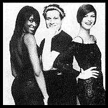

Contents | Features | Reviews | Books | Archives | Store |
 |
|
| Movie Credits | Buy It! |
Unzipped
Review by Carrie Gorringe
 |
Directed by Douglas Keeve. Starring Isaac Mizrahi and |
In the world of fashion, Isaac Mizrahi is a superstar, counting such celebrities as Lisa Minnelli and Roseanne among his fans. Facing the prospect of designing his upcoming collection for Fall 1994, Isaac Mizrahi is a superstar with a very serious problem: the reviews for his Spring 1994 collection were scathing: Women's Wear Daily, the Bible of the fashion industry, declared that he had lost both his sense of color and a sense of what women want to wear after five p.m. Mizrahi has every reason to be worried about negative press; after all, the fashion world is analogous to Hollywood, where the general opinion about how "bankable" you are is dependent upon how good your last reviews were. Taking the "you're-only-as-good-as-your-last-movie" mentality literally, this young man decides to go north, seeking inspiration in Inuit fashions as demonstrated in the 1922 documentary, Nanook of the North and the 1935 film version of Jack London's novel, Call of the Wild. All of this occurs in only the first few minutes of Douglas Keeve's documentary on Mizrahi, Unzipped. What unfolds in the remaining seventy minutes or so is an extremely intimate and often hilarious exposé of what it's like to spend one's life at the mercy of public opinion, while one is simultaneously entrusted with shaping it.
As captured by Keeve on film, Mizrahi is an absolute hoot. The ultimate in postmodern figures, he mixes diverse images and symbols taken from various socio-historical contexts without missing a beat (a trait not unknown in the art world); throughout the course of the film, the audience sees him playing Bach or Debussy on the piano, then listens to his extensive quotation from films like Whatever Happened to Baby Jane? and Valley of the Dolls (complete with spot-on imitations of the filmic scenes in question). He is of the opinion that the major trend setters of the late twentieth century, as far as fashion is concerned, were Jackie Kennedy and Mary Tyler Moore (in her "Laura Petrie" incarnation on The Dick van Dyke Show. As befitting a postmodern figure, his sense of irony is exquisite; he notes how Loretta Young, as depicted in the aforementioned film Call of the Wild, seems to survive three days of isolation on the open tundra looking as if she has just emerged from the makeup room, in true Hollywood fashion. Unfortunately, what Mizrahi does not understand is that, in the land of the postmodern, there is no such thing as an obscure symbol. Everything is accessible to anyone else with the will to find and exploit it, as Mizrahi learns to his horror when a rival (Jean-Paul Gaultier) "nanooks" him by releasing an arctic-inspired collection just weeks before Mizrahi's own show. Desperate to find another gimmick, Mizrahi seizes upon the idea of having a transparent backdrop at the back of the stage where the models usually change. This last-minute, behind-the-scenes concept, creates some problems; not only are certain supermodels understandably reluctant to place their $10,000-an-hour bodies on constant display, but the removal of privacy during preparations for the runway runs the risk of destroying illusion, an important consideration in promoting fantasy and entertainment. What transpires is best left to filmgoers to determine for themselves, but it certainly isn't dull.
The structure of Unzipped only reinforces the sense of urgency and realism surrounding Mizrahi's fight to stay on top. Keeve, a fashion photographer, relies mainly upon grainy black-and-white footage to maintain a documentary feel, using color only when necessary, and he quite rightly allows the natural chronology of the situation at hand (and the resultant tension it creates) to structure the film. His camera is mobile and his access extensive (due as much to his own position in the fashion world as it is to his status as Mizrahi's ex). Keeve's use of film clips as illustrations of Mizrahi's pop culture quotations are as useful for placing symbols in context as they are ironic. What prevents Unzipped from becoming purely satirical is Keeve's own obvious empathy with the subject; the use of often-ironic intertitles that precede each sequence (like "Nanooked") are often followed up by segments of Mizrahi playing the piano, lost in thought, or in conversations between Mizrahi and his mother, or other celebrity friends. The audience comes away with a sense of Mizrahi in both the private and public realm (if celebrities can be said to possess such separate spheres in their lives) and this depiction of balanced dualism presents Mizrahi as a complete person (or as complete as anyone in the entertainment business could ever be perceived as being). Without this balance, Mizrahi would come off looking very superficial indeed, if the film had concentrated exclusively upon the self-absorption which is a necessary trait in his line of work. Even if you don't like fashion, Unzipped is worth a look, not only because of its exemplary documentary style, but also because of its unintentionally revealing stance vis-à-vis the fashion world, thereby illustrating that the most sanguinary battles are often fought over the most socially irrelevant details.
Contents | Features | Reviews | Books | Archives | Store
Copyright © 1999 by Nitrate Productions, Inc. All Rights Reserved.